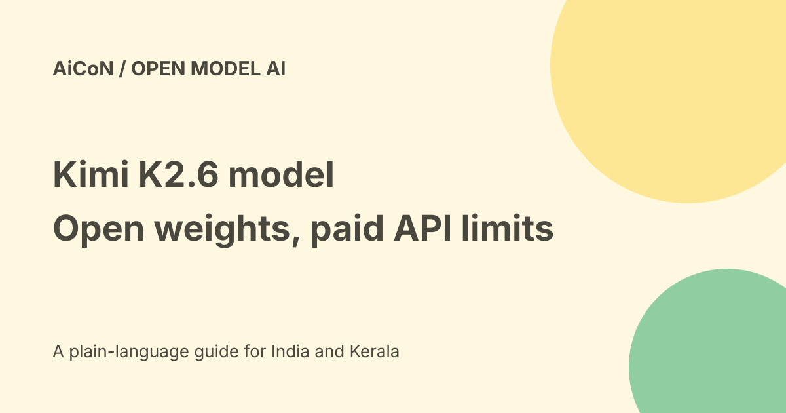

Kimi K2.6: open weights, API costs and licence limits
Kimi K2.6 from Moonshot AI is a multimodal mixture-of-experts model with open weights. Its card lists 1 trillion total parameters, 32 billion active parameters and 256K context. That does not make hosted API calls, the Kimi app or every Agent Swarm workflow free.

What do the parameter counts mean?
A mixture-of-experts model uses selected expert parts for each token. The card lists 1T total parameters and 32B activated, with a 400M-parameter MoonViT vision encoder.
Active parameters do not mean you only need memory for 32B parameters. Deployment still needs the full model arrangement and serving resources. No laptop-size hardware promise is established here.
Current context and modalities
The model card lists 256K context. The current API platform describes vision and text input, thinking and non-thinking modes, conversation and coding-agent tasks.
Multimodal does not automatically mean it accepts every media type or generates audio and video. Use the exact endpoint and card instead of transferring another Kimi model's capabilities.
Open weights versus the Kimi product
The official product page describes Agent Swarm, websites, documents, slides, spreadsheets and Document-to-Skills. The model card advertises long-horizon execution and coordinated agents.
Those are model and product claims, not proof that a bare weight download includes a hosted app, persistent computer, integrations or a ready-to-use swarm. The surrounding software and permissions matter.
Read the Modified MIT licence
The retrieved licence allows use, modification and distribution under its terms and requires keeping the copyright and permission notice. It also adds a specific commercial attribution condition.
If a commercial product or service using the software or derivatives has more than 100 million monthly active users or more than US$20 million monthly revenue, the licence requires prominently displaying "Kimi K2.6" in its interface.
The US$20 million threshold is approximately Rs 192.94 crore at the checked Rs 96.47 per dollar reference, but the licence's wording controls, not this illustrative conversion. Read the full terms for your actual use.
Current K2.6 API prices
The official platform homepage lists per-million-token rates of US$0.95 input, US$4 output and US$0.16 cache-hit input. At the sourced approximate exchange rate, those are Rs 91.65, Rs 385.88 and Rs 15.44 respectively.
Cached input is not every input. The pricing explanation says both input and output are billed, including extracted document text later sent to the model. Service tools, terms, tax and actual account billing need review.
Do not call it the latest model now
The current platform also lists Kimi K3 and K2.7 Code. This archive guide concerns K2.6, not a claim that it remains Moonshot's newest offering.
API prices and product access can change. Open weights can remain useful even after newer models appear, but comparison should be made against the actual task and cost.
Benchmark and autonomy boundaries
Moonshot's card publishes coding, reasoning, vision and agent results. These are developer-reported evaluations, not independent tests performed for this guide.
Claims about 24/7 background operation do not authorise an agent to send messages, spend money or change accounts without your approval. Long-running work needs budgets, logs, stop controls and narrow permissions.
A low-risk evaluation workflow
- Choose API access, the Kimi app or self-hosting deliberately.
- Read the exact current licence and service terms.
- For API use, confirm K2.6 and a small spending limit.
- For self-hosting, check memory and runtime requirements.
- Begin with public data and a task with a known answer.
- Inspect generated code, documents and source links.
- Keep tools read-only until they are needed.
- Review recipients, amounts and final changes before effects.
- Check actual usage and stop incomplete runs cleanly.
India, privacy and free verdict
The weights are available under the retrieved licence, but no Indian account, payment route or hosted free quota was verified. App subscriptions and Agent Swarm limits were not established from a logged-in account.
No model was downloaded, API key connected or autonomous task executed here. Malayalam quality, Indian data residency and self-hosted speed remain untested. Review cloud data handling before sending private material.
What changed since the original post?
We add the exact Modified MIT condition, current K2.6 API rates and the distinction between model weights and hosted Agent Swarm. We avoid calling it the newest model when the current platform lists newer options.
Frequently asked questions
Are the weights ordinary MIT?
The licence is Modified MIT with an additional large-commercial-use attribution condition.
Is the API free because weights are open?
No. The current API page lists paid token rates.
Was Agent Swarm tested?
No. Product access and task limits were not tested.
Sources: Official K2.6 model card · Exact Modified MIT licence · Official K2.6 product page · Current official API models and prices · Official pricing explanation · Approximate exchange-rate reference. Checked 7 October 2026.